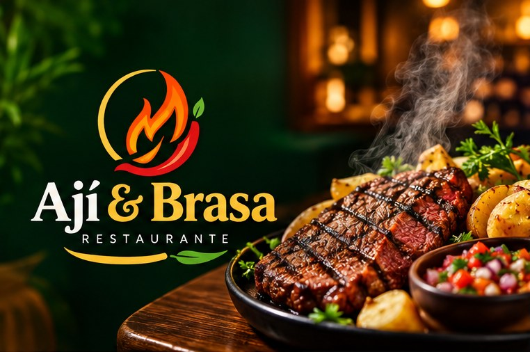

Ceviche clásico
Pescado del día, limón, ají limo y camote.
S/ 32
Pollo, anticuchos y ceviches con ají fresco. Mesa para compartir, sabor de casa.
Reservar mesa
Pescado del día, limón, ají limo y camote.
S/ 32
Cuarto con papas, ensalada y cremas.
S/ 24
Corazón macerado, papa y choclo.
S/ 28
Wok a fuego alto con papas fritas.
S/ 30
Carnes, chorizo, yuca y ensaladas.
S/ 68
Jarra de 1 litro, receta casera.
S/ 12
Cocinamos en parrilla de carbón con insumos de mercados locales. Cada plato se prepara al momento.
Indica día, hora y número de personas.
Te escribimos por WhatsApp en minutos.
Tu mesa te espera lista.
“Llegamos en familia y todo salió perfecto. El pollo, buenísimo.”
“Los anticuchos son los mejores que he probado.”
“Atención rápida y porciones generosas.”
Sí, desde 8 personas. Escríbenos con 24 horas de anticipación.
Sí, ensaladas, tortilla de verduras y guarniciones.
Sí, en un radio de 5 km.
Lunes a domingo, 12:00 a 22:00
Av. Principal 123, Lima